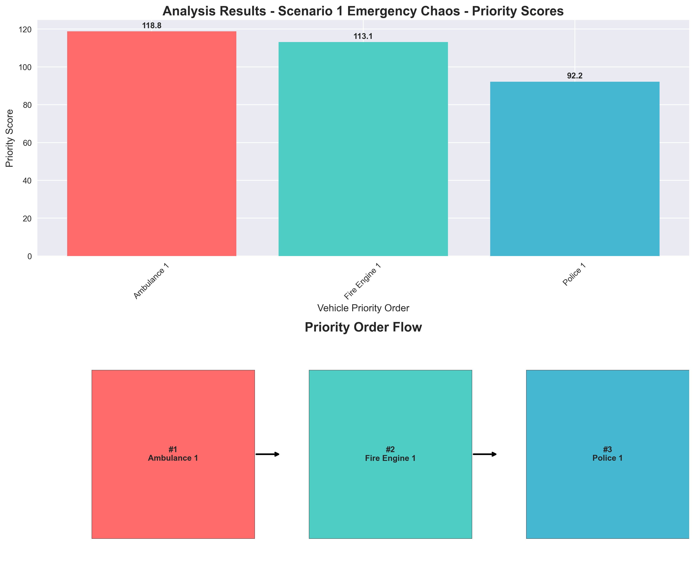

🚨 Emergency Intersection Priority System
Output Visualizations & Analysis Results
📊 Overall Summary
System Output Summary

🎯 Priority Analysis Charts
Emergency Chaos Scenario
Civilian Only Scenario

Emergency vs VIP Scenario

📈 Score Breakdown Analysis
Emergency Chaos Score Components

Civilian Only Score Components

Emergency vs VIP Score Components

🔄 Decision Flow Process
Emergency Chaos Decision Flow

Civilian Only Decision Flow

Emergency vs VIP Decision Flow

📊 Scenario Comparison Analysis
Cross-Scenario Comparison

🔍 Key Insights from Analysis
🚑 Emergency Priority
Ambulance consistently receives highest priority (118.8 points) when lights are active, followed by fire engines (113.1 points) and police (92.2 points).
📊 Score Components
Base priority (vehicle type) + 15 points for active lights + proximity bonus + arrival time bonus = total priority score.
🎯 Confidence Levels
All scenarios achieved 100% confidence, indicating the system is highly reliable for these test cases.
⚡ Decision Process
The system follows a clear 5-step process: Image Input → Vision Analysis → Priority Scoring → Tie Breaking → LLM Cross-Check → Final Output.
📋 Output Format Explanation
JSON Response Structure:
{
"ordered_ids": ["ambulance_1", "fire_engine_1", "police_1"],
"scores": {
"ambulance_1": 118.8,
"fire_engine_1": 113.1,
"police_1": 92.2
},
"reasoning": "Scores blend emergency level, right-of-way signals, proximity and arrival.",
"legality_notes": "General rule: yield to emergency vehicles with lights/sirens active.",
"confidence": 1.0,
"requires_human_confirmation": false
}